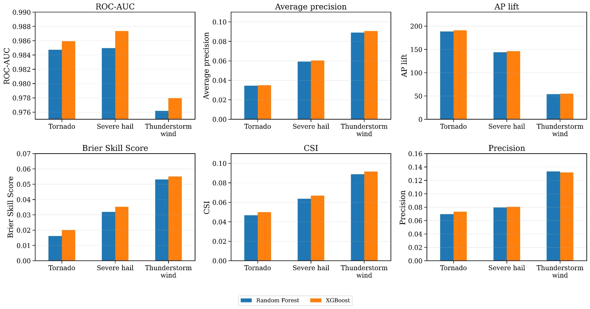
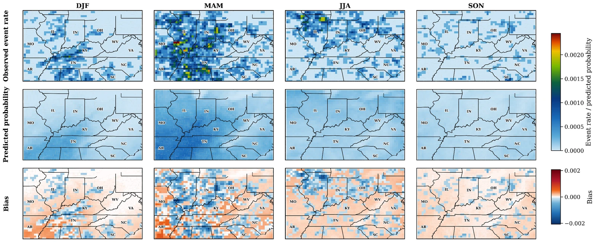
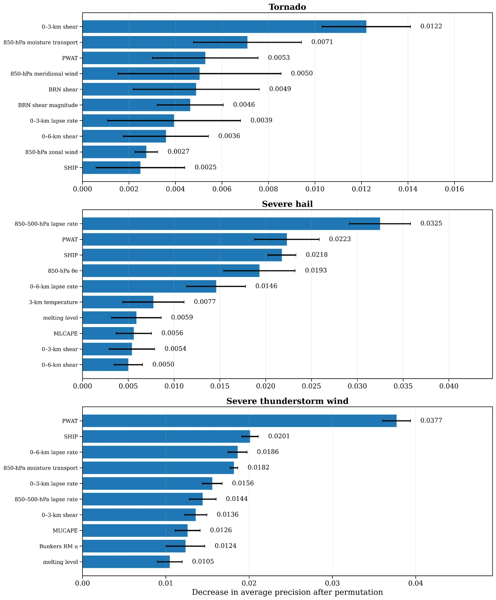
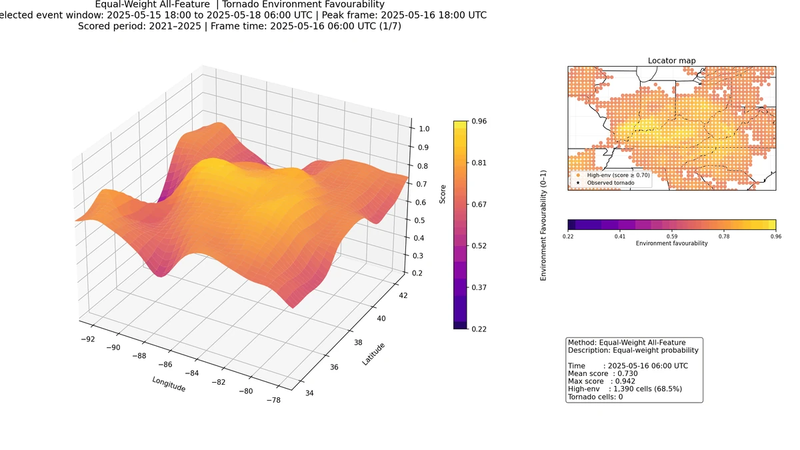
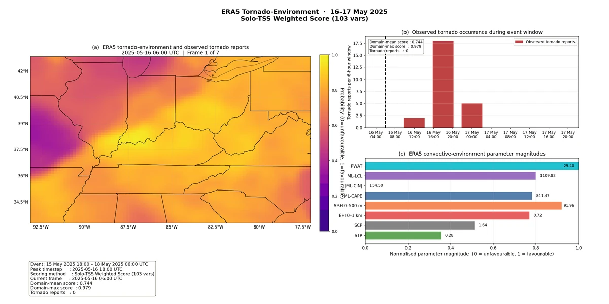

Learning the environments behind severe storms
A 30-year ERA5 framework for estimating tornado, severe-hail, and severe-wind occurrence across the Ohio River Basin.
- Record
- 1996–2025
- Diagnostics
- 107
- Time step
- 3 hours
- Models
- RF + XGBoost
The question
What can the large-scale environment tell us about where severe weather occurs?
I develop probabilistic models that connect ERA5 atmospheric environments with NOAA Storm Events reports. This work evaluates tornadoes, severe hail, and severe thunderstorm winds separately, accounting for the different environmental controls and rarity of each hazard.
Data & methods
A closer look at
the approach.
The framework matches storm reports to ERA5 grid-time samples using a 25-km radius and a forward three-hour interval. Random Forest and XGBoost models are trained on 1996–2018 data, calibrated on 2019–2020, and evaluated on an independent 2021–2025 test period. The analysis includes discrimination, calibration, rare-event performance, spatial verification, and permutation importance.
Findings & context
What the work shows.
- XGBoost shows stronger discrimination than Random Forest across all three hazards in the independent test period.
- ROC AUC is 0.986 for tornado, 0.987 for severe hail, and 0.978 for severe wind. Average precision is 0.035, 0.060, and 0.091, respectively; rare-event performance remains an essential part of interpretation.
- Calibrated fields reproduce broad seasonal and spatial patterns, while case studies show where environmental information succeeds and where events remain difficult to identify.
Submitted to Artificial Intelligence for the Earth Systems; peer review is not complete. These are research estimates of report occurrence, not operational forecasts.
From historical environments to future climate
My wider M.S. thesis compares ERA5 with downscaled CMIP6 and examines future severe-storm-supportive environments under SSP2-4.5. This climate-projection work is distinct from the historical machine-learning evaluation above.
From the analysis
Research figures.
Select a figure to view it larger.
{kind=link}


{kind=link}

{kind=link}

A moving view
Storm environment animations.

